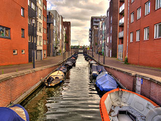
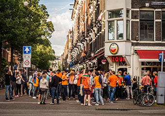
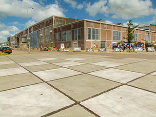

Amsterdam Flower Market
Amsterdam, Netherlands
The only floating flower market in the world
Amsterdam's Flower Market is a renowned icon in the Singel canal, at the heart of the city's UNESCO-listed Canal Ring. The market here actually dates from 1862, when flower growers would sail their wares on barges into the city's centre via the Amstel River.
112
23



